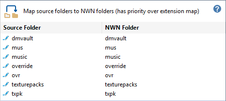
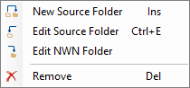
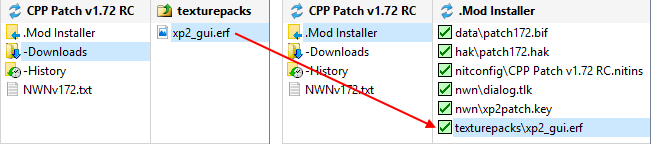

This map defines folder names used to determine where files are placed in the Installation or User Files directory. If supported files are stored in a folder defined in this list, then both the extension and file maps are ignored.

Click the  Edit Icon, Right-Click, Double-Click or press the Space Bar to access the Map Folders menu.
Edit Icon, Right-Click, Double-Click or press the Space Bar to access the Map Folders menu.

Supported files stored in the Source Folder are placed in the associated NWN Folder without using the Extensions map to determine the target Installation or User Files directory. Usually both the Source and NWN folders have the same names.
For example, erf files in the texturepacks folder are copied to the NWN's texturepacks folder instead of the default erf directory.

Work with the Folders map